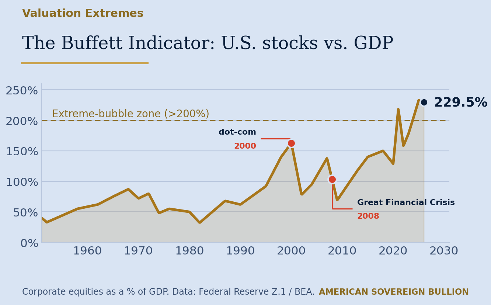
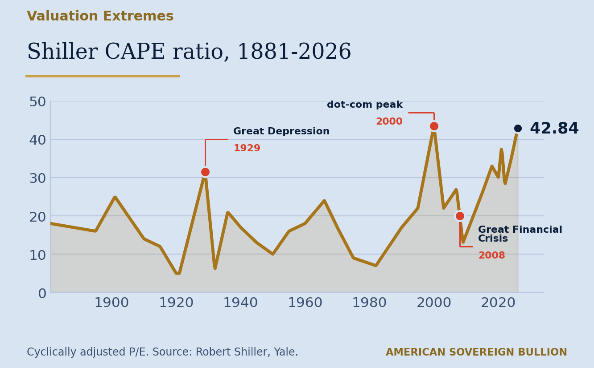
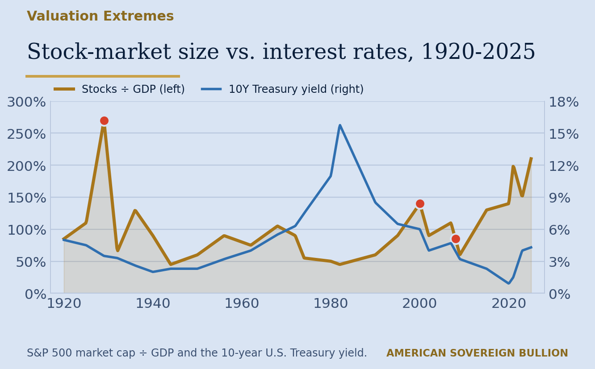
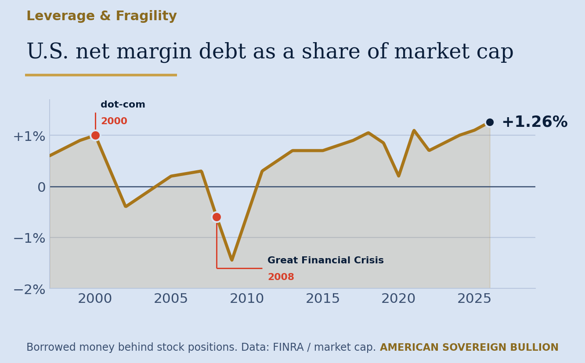

Twelve long term measures of the stock market, and what each one is showing right now.
Published July 2026. Figures are as of that date.
Say Goodyear built a tire that never wore out. They would sell an enormous number of tires, and then go bankrupt. They need you to keep coming back. All tire companies do.
So let us say mankind created financial good times that never busted. Cars that never crashed. Homes that never caught fire. Goodbye car insurance, goodbye home insurance. Gold and silver would not be necessary either, because there would be no bad times. Man would have built a world with no busts.
When my son was seven, Sesame Street put out a video where Elmo got to enjoy Christmas every single day. Every morning, more presents to open. A world with no housing crisis, no bankruptcies, no recessions.
But what if everything is cyclical?
There are growing times and harvest times. Spring and summer, then fall and winter. Companies grow, then recede. Do markets not seem to climb, and then fall?
If there are indicators that things are set to rise, there must be indicators that they are set to shrink. That is what makes a cycle. If it only went up forever, there would be no cycle at all.
By the National Bureau of Economic Research record, the Great Financial Crisis of 2008 was the eleventh U.S. recession since the Second World War. A twelfth followed in 2020. The signals of the fold them phase are below.
Not one warning. Not two. Twelve, across valuation, leverage, and the broader economy. Count them as you go.
Total U.S. stocks are now worth about 2.3 times the size of the entire U.S. economy, near 229.5%. Anything above 200% has marked past bubbles.

Prices measured against long run earnings sit near 42.84, among the highest readings in more than 140 years, a level last seen right before the 2000 crash.

A check on how broad the rally really is. Beneath the headline index, the gains lean on a handful of giant technology names rather than the whole market.
How large the stock market has grown relative to the economy, set against the 10 year Treasury yield. Both are back at historic extremes.

Even after accounting for interest rates, valuations have climbed back toward the 1929 and 2000 extremes.
What investors pay for each dollar of a company’s assets. Large caps are far above small caps, and well past the levels of the year 2000 top.
What investors pay for each dollar of company sales, at or near record highs for both large and small caps.
That is the cash and short term Treasury position on Berkshire Hathaway’s balance sheet at March 31, 2026. Warren Buffett left $373.3 billion behind when he stepped back from the chief executive role at the end of 2025, and under Greg Abel the pile grew by another $24 billion in the following quarter. Berkshire has been a net seller of stocks, not a net buyer.
Investors are betting on stocks with a near record amount of borrowed money. Borrowed money does not cause the turn. It deepens the losses once the turn arrives.

Investors are crowding into bullish bets with very little protection in place, a one sided market. Similar positioning was present ahead of the 1999 and 2007 tops.
Stubborn inflation, made worse by energy costs tied to Middle East tension, is squeezing both company profits and household budgets at the same time.
Normally a weakening economy brings interest rate cuts. But if inflation stays hot, the Fed may be forced to raise rates instead, a move that has historically triggered sell offs.
Lower income households are under real strain. Credit card delinquency rates have been rising, as reported quarterly by the Federal Reserve Bank of New York in its Household Debt and Credit Report. Small business confidence and spending show the same underlying weakness.
Americans held $18.2 trillion in individual retirement accounts and another $13.8 trillion in employer defined contribution plans at March 31, 2026, roughly $32 trillion between them. Most of that is invested in the market rather than sitting in cash.
Several of the measures on this page are at readings they last reached before the 1999 and 2007 market peaks. That is a description of where the readings sit today. It is not a prediction of what happens next.
If the firm holding your savings has not walked you through any of this, we are happy to. There is no cost and no obligation to the conversation.
If it really is all cyclical, then it is worth knowing where you are on the cycle and what you actually own. Let us get past being strangers.
So let us build a consensus. Is everything in life and on this planet cyclical, or is it random?
Figures are as published on the dates shown. Market levels move; nothing on this page is updated after the publication date above.
This briefing is for general education only and is not investment, tax, or legal advice. Precious metals can rise and fall in value; past patterns do not guarantee future results. Consider your own situation and speak with a licensed professional before making any decision.
Physical gold and silver, delivered to your door or held in your name. Speak with a no pressure specialist today.